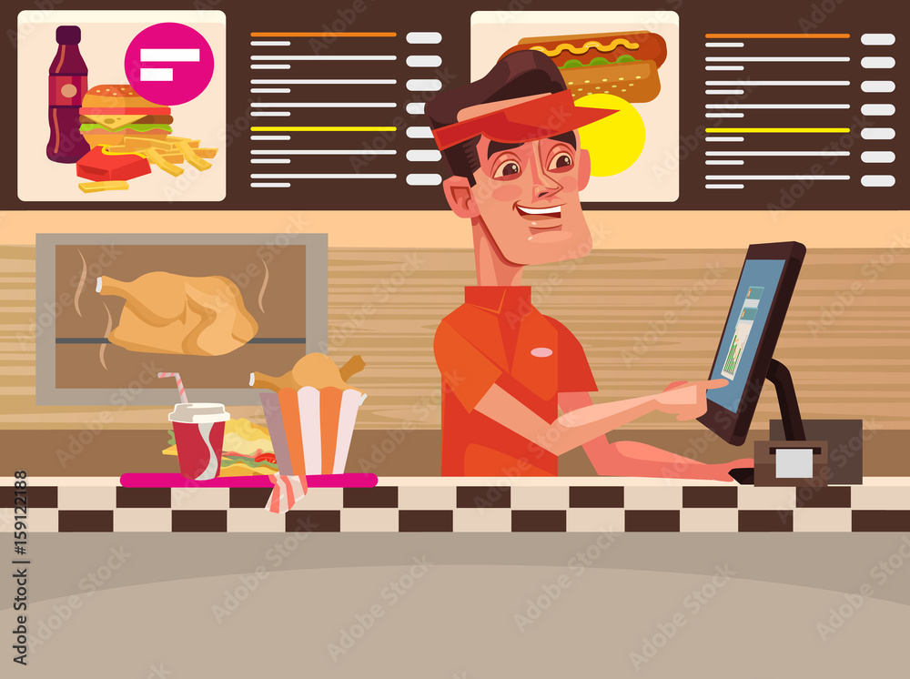
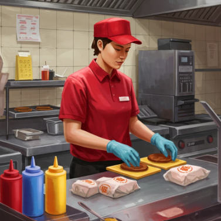
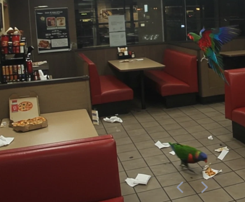

Roles as a Fast Food Worker

Cashier Duties
Cashiers take customer orders, handle payments, and help customers with their requests. They need to work quickly and accurately while providing friendly service.

Kitchen Duties
Kitchen workers prepare food by following recipes and safety procedures. They use different cooking equipment to make sure meals are prepared correctly and consistently.

Cleaning Duties
Cleaning is an important part of a fast food worker's job. Workers clean tables, floors, equipment, and preparation areas to maintain a safe and hygienic environment.